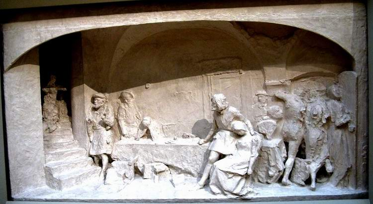
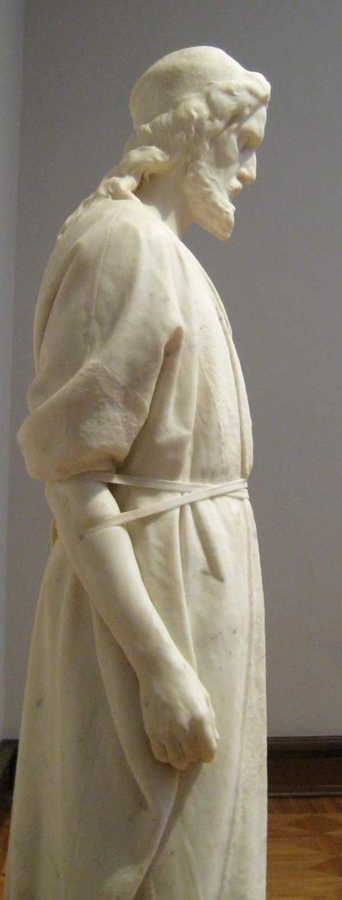
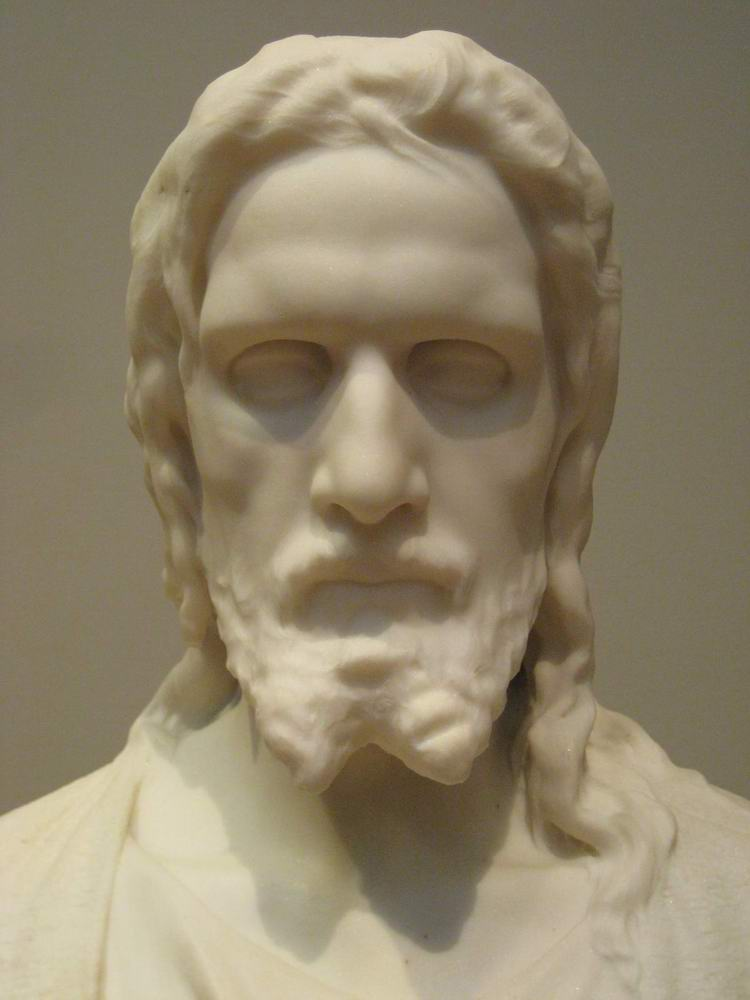

МАРК АНТОКОЛЬСКИЙ. ХРИСТОС перед судом народа. ч.II
Владимир Соловьев: "Иудеи всегда относились к христианам по-иудейски. Но христиане редко относились к иудеям по-христиански". В этом и заключается весь еврейский вопрос, ставший главной темой Антокольского. Он резал камни, чтобы растопить каменные сердца. И главным своим врагом считал фарисейство, равнодушие людей, уверенных в своей праведности.
Автор Дмитрий Менделеев
начало статьи см. здесь
Варварский набор евреев в армию отменил только Александр II. И он же положил конец петербургским унижениям Марка Матвеевича.

Сначала, как патронесса академии, к нему заглянула великая княгиня Мария Николаевна. Она три раза подала ему руку. Много раз поздравляла и заказала для себя эскиз нападения инквизиции на евреев. Некоторые люди при сильном потрясении ничего не чувствуют. На них находит столбняк. Так было и с Анткольским. Только когда он остался один, он отдался своей радости и слезы его хлынули неудержимо. А вскоре к Марку Матвеевичу пожаловал и сам государь. Осмотрев «Инквизицию» и «Великого инквизитора Грозного», он произнес: «Хорошо, очень хорошо!»

С этого дня народ повалил к Антокольскому толпой.
" Ты знаешь", -закричал Антокольский, вбегая к Репину и задыхаясь от волнения, - "знаешь, кто у меня сейчас был? Иван Сергеевич Тургенев!"
" Что ты!" - закричал тот в ответ. И глаза его сделались совершенно круглыми от изумления.
И.Тургенев:
"Я нахожу эту статую шедевром по историческому проникновению, психологии и прекрасному выполнению. И это сделал маленький молодой человек, бедный, как церковная крыса, болезненный, начавший работать и выучившийся чтению двадцати двух лет."
Рим, февраль 1874 г., М.Анткольский Стасову:
"Каждый день у меня бывает что-нибудь новое: сегодня рука болит (у него был острый ревматизм), завтра – голова, после завтра – желудок, там – нарыв. В Вильне уже говорят, что я умер (поторопились). И я стал получать телеграмму за телеграммой – дескать жив ли еще? А все таки я не теряю бодрости духа. Что будет, чем кончит человек – это не трудно отгадать. И от того я не думаю о себе, а работаю и работаю на сколько могу, и настоящее посвящаю будущему. Право, так легче живется.
Вчера я кончил Христа. Это для меня большой праздник, потому что это было самое трудное из всего, что я до сих пор сделал. Я оставил его на несколько дней открытым для здешних художников. Неловко Вам передать все отзывы об этой статуе, но могу сказать, что был общий восторг! Моего намерения не посылать его покуда в Россию, я не изменю. Думаю, что таким образом, сэкономлю два-три фунта крови, которые необходимы мне для будущей работы.
Что же касается того, насколько я сам лично доволен, - право не могу сказать, потому что все, что было во мне, я передал этой статуе. А теперь устал и отупел."
Позднее Марк Матвеевич признался: «Первой пригласил я в судьи-ценители прачку. И когда увидел, что статуя произвела на нее впечатление, только тогда я и сам почувствовал, что работа удалась, что я выразил именно то, что хотел».

М.Анткольский Стасову:
"Под судом народа я подразумеваю и теперешний суд. Я убежден, что если бы Христос воскрес теперь и увидел, до чего эксплуатировали Его, до чего доведены Его идеи отцами инквизиции и другими, то, наверное, Он восстал бы против христианства также, как восстал против фарисеев, и еще десять раз дал бы Себя распять за правду."
Антколькольский - Елизавете Григорьевне Мамонтовой:
"Иисус Назорей явился, когда израильская нравственность начала падать, когда религия и власть стали злоупотреблять своими правами. Но московские фарисеи, по узости ли ума или по кривизне души толкуют о моем произведении так, как им хочется. Иными словами, они забывают священную историю и не хотят думать о том, что ослепший русский народ может постичь точно таже участь, что и еврейский – две тысячи лет назад."

Хотя, конечно, были и будут единичные исключения, которые радуют в русской истории. Подобные личности встречаются больше среди духовенства, т.к. монастырь был единственным убежищем для честных людей. Но именно эти люди и есть герои людской драмы. Честность страдает, а зло торжествует. Все это подкрепляет меня в моей идее изобразить мефистофеля – призрак, через который видны все пороки человека.

Статуя Христос перед судом народа получилась настолько злободневной, что ее поняли и оценили не только Репин или Стасов с Тургеневым, которые в один голос назвали ее гениальной, или Савва Иванович, давший деньги на мраморную и бронзовую копию скульптуры. На международной выставке в Париже Антокольский получил главный приз – большую золотую медаль и орден почетного легиона.

Он встал за народ, за братство и за свободу, за тот слепой народ, который с таким бешенством и незнанием кричал: «Распни, распни Его!»
 М.Антокольский:
М.Антокольский:
"Я Его представляю в тот момент, когда Он стоит перед судом того народа, за который Он пал жертвой. Я выбрал этот момент во-первых потому, что здесь и связался узел драмы. Его душевное движение в эту минуту является необыкновенно грандиозным. Действительно, только в эту минуту мог сказать только Он: «Я им прощаю, потому что они не ведают, что творят».
начало статьи см. здесь
см. также статью "Тернии и звезды МАРКА АНТОКОЛЬСКОГО"